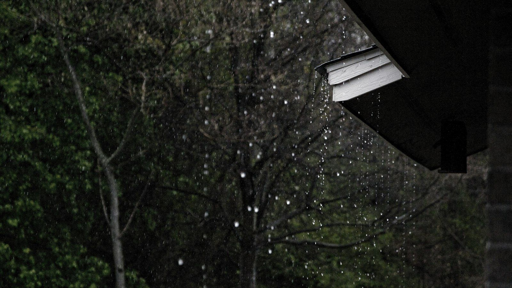

Our winters are usually the dry season. El Niño flips that. When it's strong, Florida tends to get a wetter, stormier winter, with long gray stretches where it rains on and off for days.
Back in July we put together a storm-prep checklist for getting your roof ready. This post is about what those long stretches of rain actually do to a roof, and how to spot a leak before it turns into a much bigger repair.
Why steady rain is harder on a roof than a thunderstorm
We're all used to the 3 o'clock summer storm. It's loud and it dumps a lot of water, but it's usually over in an hour, and then the sun comes out and the roof dries off.
Days of steady rain don't give the roof that chance. Everything stays wet. Water has time to work its way into small gaps, wick sideways under laps and flashing, and sit in places it normally would have dried out of. A tiny weakness that's been fine for years can start leaking in its third straight day of rain.
Where the water usually gets in
- Flashing around chimneys, skylights, walls and vents. When sealant dries out and cracks, this is the first place water finds.
- Pipe boots. The rubber collars around plumbing vents crack in our sun. This is one of the most common leaks we fix, and one of the cheapest to fix early.
- Valleys, where two slopes meet and carry the most water.
- Nail pops and lifted shingles that a storm loosened months ago.
- Under tile. On a tile roof, the tile sheds most of the water, but the underlayment underneath is the real waterproofing. Long rain is exactly what tests it.
- Flat roofs, where water that doesn't drain can sit and pond for days.

What it does when it gets in
Water that gets past the shingles soaks into the wood decking underneath. Wet decking softens and eventually rots, and that's how a small leak becomes a section of roof that has to be rebuilt. We see it all the time once the old shingles come off, like on this St. Petersburg re-roof. Inside the house, it's damp insulation, stained drywall and, given enough time, mold.
Early warning signs to look for
- A yellow or brown ring on the ceiling, even a small one
- Peeling paint or bubbling drywall, especially in ceiling corners
- Water dripping from a light fixture or ceiling fan
- A musty smell in the attic or a closet
- Damp or matted insulation in the attic
- Granules collecting in your gutters or at the bottom of the downspouts
During a long rainy stretch, it's worth taking a flashlight into the attic once or twice. You'll often see a leak there days before it ever shows up on a ceiling.
Found a leak? Here's what to do
Put a bucket under it and move anything valuable out of the way. Take a few photos. If you can safely get into the attic, see if you can spot where the water's coming from, since that helps us find it faster. Then call us.
Please don't wait for the rain to stop. Leaks don't stay small, and every wet day gives the water more time to spread. If it's bad, we can get the roof tarped until it's dry enough to make a proper repair.
Seeing a stain, a drip, or a musty attic?
Call (727) 397-3800